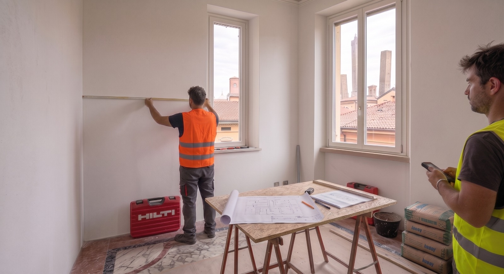

Edilizia
Con esperienze acquisite per ciò che concerne rilievi, progettazione architettonica, schema impianto elettrico, ristrutturazione, frazionamenti, direzione lavori, con conoscenza delle principali procedure autorizzative inerenti la realizzazione di interventi di edilizia privata, ad uso abitaivo e commerciale.